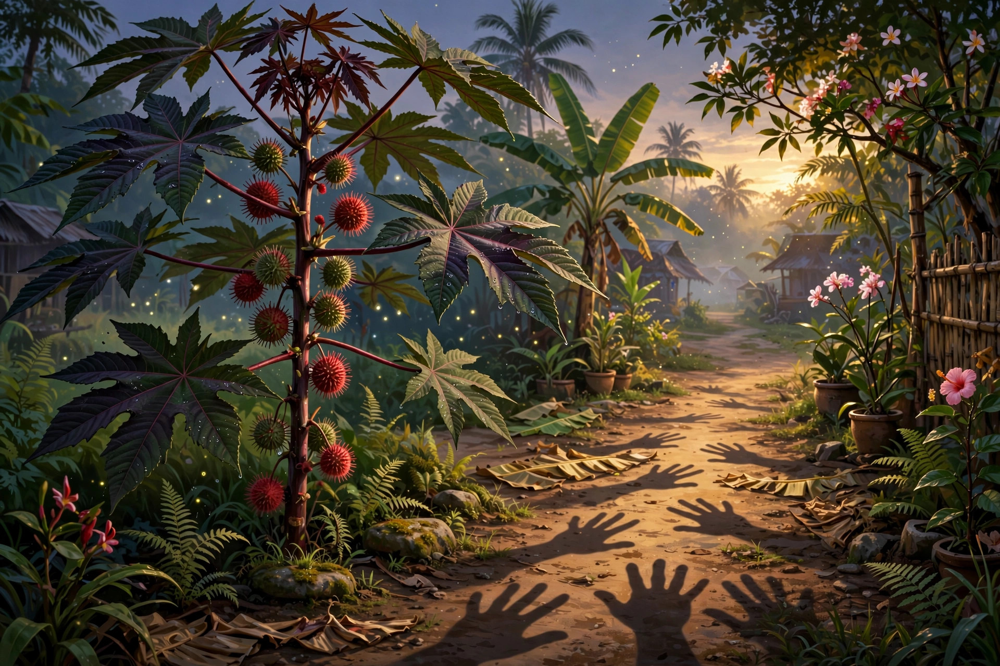

Tangantangan — the castor oil plant, Ricinus communis — a tall shrub with big palmate leaves shaped like open hands and spiky seed pods. Its seeds yield castor oil, and the same seeds carry ricin, one of the most potent plant poisons known.
Say it out loud: tahng-ahn-tahng-ahn. The doubling is the meaning. Tagalog repeats the root to say many or like — hands, hands, hands, because every leaf is a hand. One word, one plant, one quiet warning: medicine and poison in the same pod.
From Tagalog tangan ("hand") + reduplication. The funny-looking ones are always load-bearing.
One root, one doubling, one Latin rename — tap each:
Hands in Manila, ticks in Uppsala. The seed does both jobs — it looks like a tick, it grows on a hand-leaf.
Three facts that have to be held together:
Big, star-shaped, palmately lobed leaves on long stalks, green to deep red-purple. The silhouette alone identifies it — no other common garden shrub wears quite that hand.
Pressed seeds give castor oil — laxative, lubricant, old household staple. The seed coat holds ricin. The oil is safe only because processing removes it. Never chew the seeds; a few can kill.
Castor bean, castor oil plant, Palma Christi ("palm of Christ") for its reputed healing, wonder tree, lansina in Tagalog too. Every name picks a different half — healer or hazard.
Castor seeds turn up in Egyptian tombs; the oil lit lamps and dressed skin thousands of years before anyone wrote the word down. The plant traveled with people because it was useful.
Carl Linnaeus gives it Ricinus communis in Species Plantarum — tick, common. Science files it under the seed. Tagalog keeps it under the leaf.
Castor oil becomes the 19th- and early-20th-century household cure-all — the dreaded spoonful, the machine lubricant, the "Palma Christi" in the medicine cabinet. Useful, unpleasant, respected.
Now it is mostly ornamental and industrial — biodiesel, lubricants, cosmetics — and a teaching plant for the medicine-poison line. Gardens grow it for the leaves; chemists watch it for the seeds.
1. Tangantangan is…
2. The reduplication in tangan-tangan signals…
3. The poison in the seeds is…
You mine Blossom for prompt seeds — here's this one, ready to plant:

Tonight's render — spot the quiet impossibility.